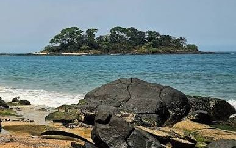
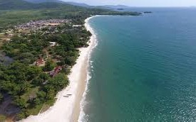
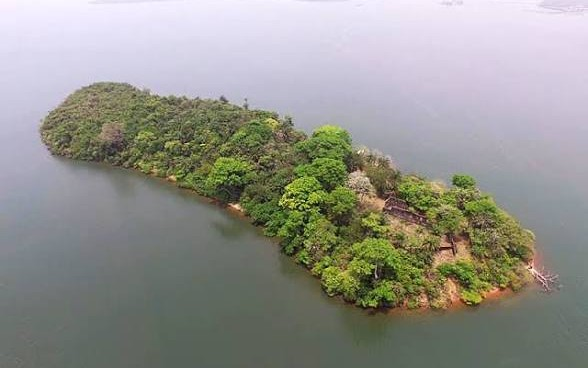

Add photo: images/tokeh-beach.jpg
Add photo: images/tokeh-beach.jpgTokeh Beach
BeachSoft white sand and calm water on the Freetown Peninsula, with lagoon views and fresh seafood.
Read moreAdd photo: images/tokeh-beach.jpgSoft white sand and calm water on the Freetown Peninsula, with lagoon views and fresh seafood.
Read more Add photo: images/banana-island.jpg
Add photo: images/banana-island.jpgA quiet island reached by boat, with fishing villages, colonial ruins and clear swimming.
Read more
Add photo: images/bureh-beach.jpgWest Africa's best-known surf break, with a relaxed village and a river meeting the sea.
Read more Add photo: images/national-parks.jpg
Add photo: images/national-parks.jpgRainforest reserves home to chimpanzees, pygmy hippos and hundreds of bird species.
Read more
Add photo: images/river-no-2-beach.jpgA community-run beach where a river, mountains and the Atlantic share one view.
Read more
Add photo: images/bunce-island.jpgA historic site on the Sierra Leone River that tells an important part of the Atlantic story.
Read more